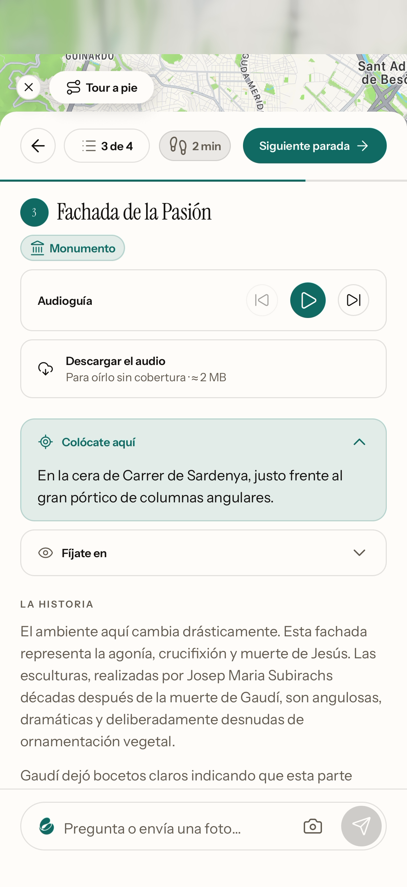
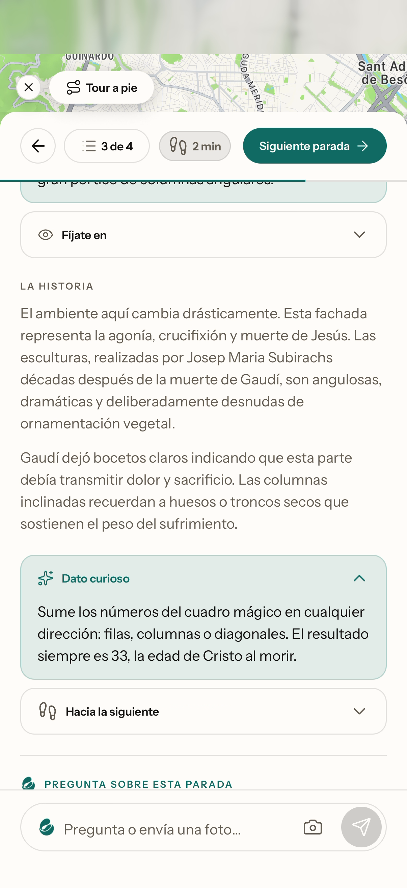
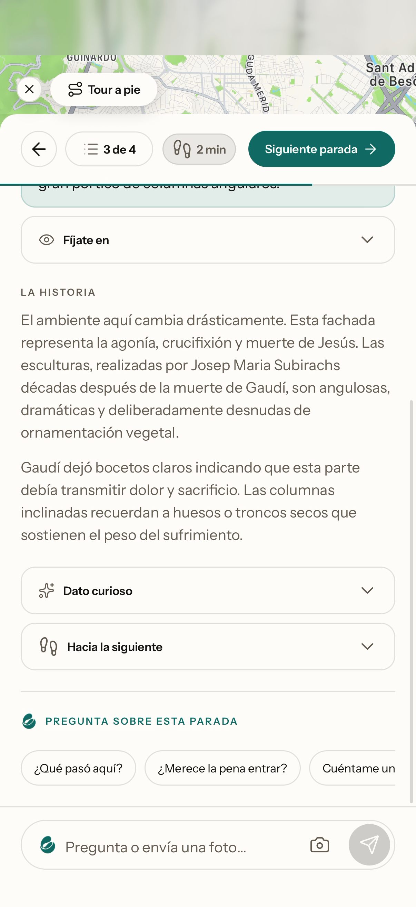

¿Y si tus viajesempiezan a sonar así?
Y tú eliges quiénte la cuenta.
Te la cuentaparada a parada.
Con sudato curioso.
Y le preguntaslo que quieras.
KORE
PUCK
CHARON
Esta fachada representa la agonía, crucifixión y muerte de Jesús.
Las columnas inclinadas recuerdan a huesos o troncos secos.
Suma los números del cuadrado mágico: siempre da 33, la edad de Cristo.

Llega en octubre.
Tu primer viaje por 1,99 €*
*Si te apuntas a la lista de espera en travelsnomad.com